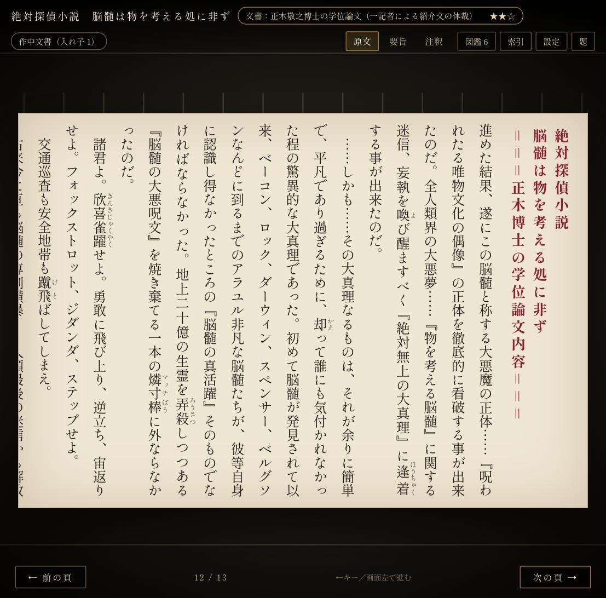
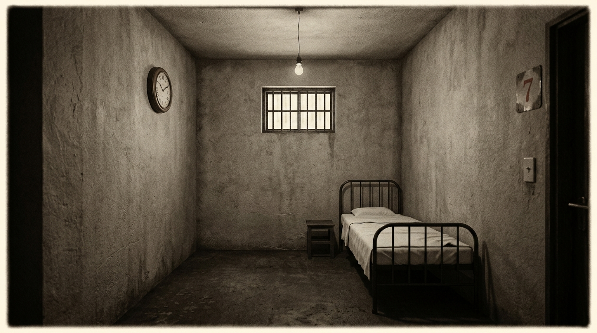
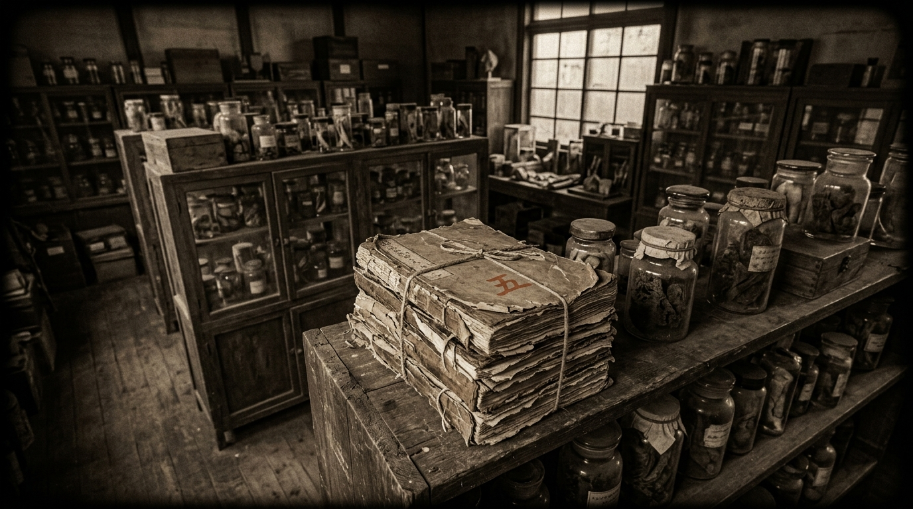
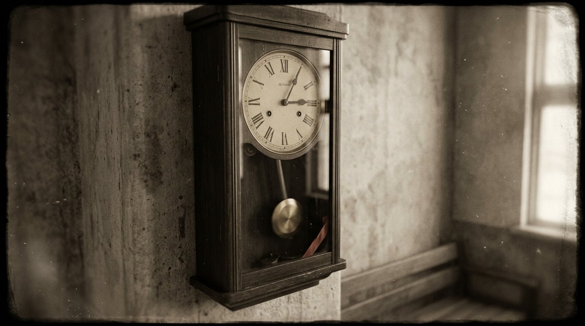
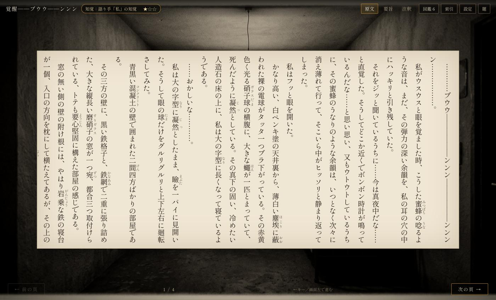

公開 URL：https://sayonari.github.io/dogra-magra-game/（GitHub Pages，反映まで数分）／ローカル：npm run dev
| 工程 | 結果 |
|---|---|
| タイトル（巻頭歌 縦書き）→ はじめから | OK |
| S01 巻頭歌 → S02 覚醒（5頁，ルビ・傍点）→ 証拠カード「時計の音」 | OK |
| S03 若林の来訪（9頁）→ 証拠カード「私は誰か」 | OK |
| S04 標本室（6頁）→ 入れ子の本（同じ巻頭歌・同じ第一行）→ カード「原稿内の巻頭歌」 | OK |
| S07 脳髄論（13頁，朱の見出し）→ 電話交換局ミニゲーム（前半5接続／後半混線）→ 解説カード3枚 | OK |
| 理解課題5問（誰の説明か／支持証拠／反証）→ 論点版バッジ | OK |
| 結末：暗転＋時計音3回 → タイトル → 索引（物語版・論点版 達成，原文 24%→修正後は全頁記録，周回1） | OK |
| 設定：縦/横切替・文字サイズ・絵柄 A/B・音量 | OK（横書きも見出し付きで動作） |

API キーを受領し3枚を生成．七号室と標本室（綴込み原稿）は背景に組込み済み，柱時計は今後の物品カット用．台帳は assets/LEDGER.csv，生成は assets/scripts/gen_image.py．



組込み後の画面（覚醒の場面）：

気づき：算用数字「7」が出やすい（作中は「第七号室」），時計の文字盤に商標風の文字が入る．次回は漢数字指定と no brand text を追加．
記録：.spec/TODO.md・.agent/handoff/HANDOFF.md・.spec/KNOWLEDGE.md（コピペ用 .md は作成していません）